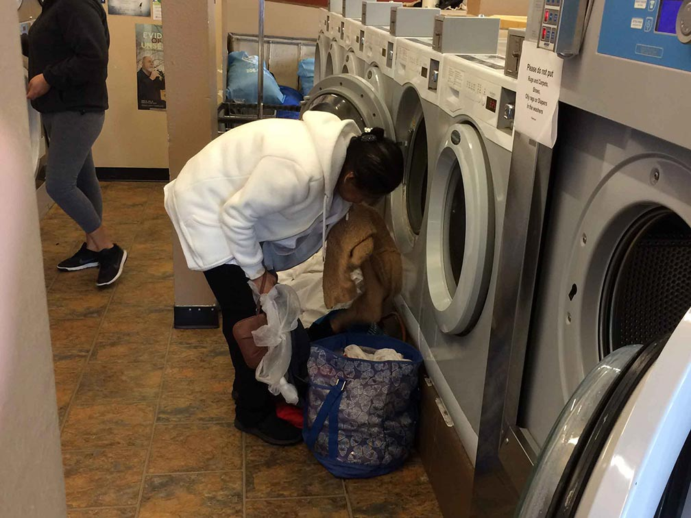
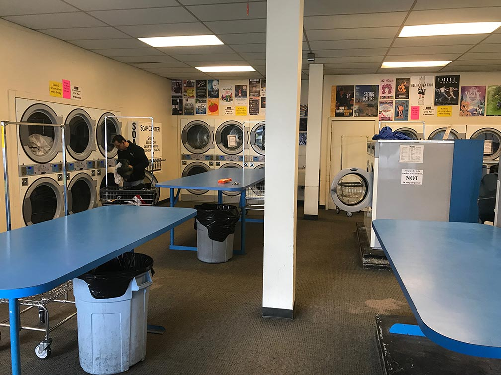
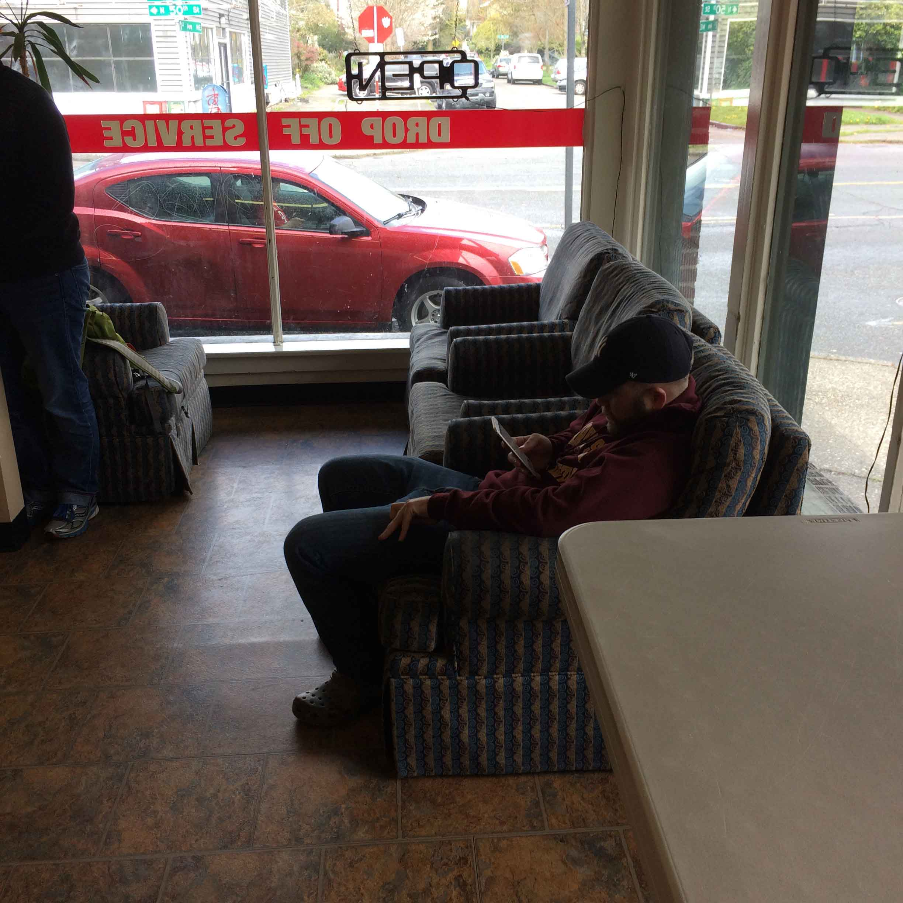
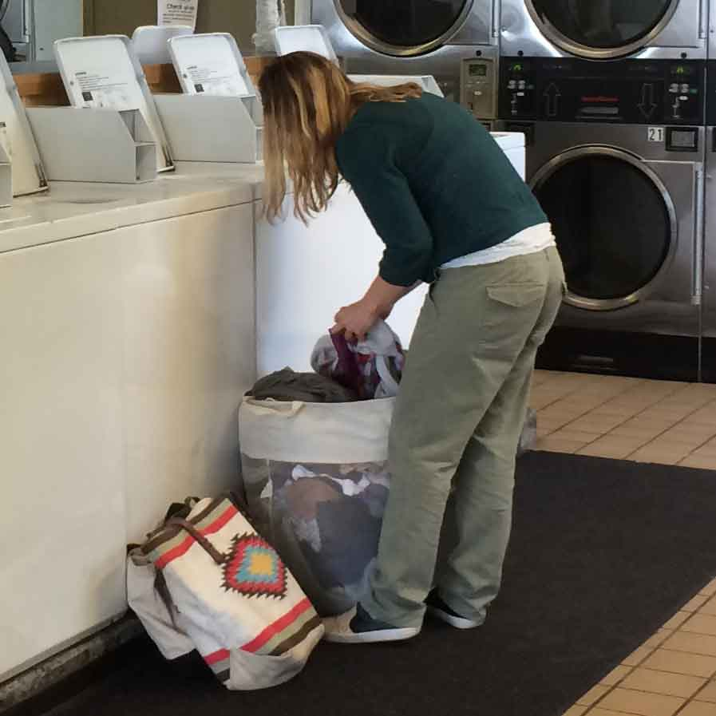

Despite our project choice, none of us had very much experience with commercial laundromats. We needed to get out and talk to people and explore.
Swift Spin
How might we improve the laundromat experience for people who regularly use laundromats out of necessity?
Challenges
What does is mean to design a service? How do people experience services? We decided to redesign the laundromate experience because we knew it was not an ideal experience, and a great topic in which to answer these questions.
However, along the way, we needed to consider some different aspects:
- Understanding our proposed customers
- How one user experience flowed into the next (there wasn't just one!)
- Conveying information to customers thoughtfully to reinforce a positive experience
Primary Research
Interviewing Patrons
From talking to 5 different patrons we saw some common issues.
Interview Findings:- Nothing to do while waiting
- Convenience and proximity are key
- Completing laundry is the first goal
Observing Laundromats
We also observed the laundromat environment, noting down some key aspects about the 4 different laundromats we visited.
Observation Findings:- Not welcoming - dingy & outdated
- Patrons busied themselves on their laptops or smart phones
Personas
Research in hand, we now needed to synthesize it all in to something usable. Something like a persona or two.
Doug Kerkowski
Objective: Get it done in the most efficient way possible.
Other Traits:- Patron of his local laundromat - but not by choice
- Dislikes crowds and waiting
- Values convenience
- Doesn’t care about amenities
Jessica Garcia
Objective: Wants to make the most out of doing laundry.
Other Traits:- Her hectic schedule doesn’t allow her to regularly do her laundry
- She seeks amenities like free wifi and work desks
- Sometimes feels like socializing with other people too
- Enjoys a well decorated laundromat
Key Scenario
We imagined to make the laundromat experience as convenient and pleasant as possible. The personas we had previously constructed help us map out the scenario and identify touch-points our customers would want.
Key Touch-points:- App to reserve ahead of time
- Pay at the machine without coins
- Wifi and a pleasant environment
- Cafe adjoined to the laundromat
Service Prototype
To design a service necessarily means prototyping that service. Since we wanted to create a laundromat, we planned to transform a room into a laundromat with as many of the touch-points as we could develop.
Items to Prepare:- Mobile app paper prototype
- Kiosk paper prototype
- Machine UI paper prototype
- Cardboard Washer & Drier props
Mobile App
A key feature of our service was our mobile interface. Because people typically always have it on themselves, we wanted to enable people to interact with Swift Spin the most through it.
Flows:- Onboarding
- New Machine Reservation
- Current Reservation
- Discounts
- Door Key
Kiosk User Interface
The kiosk would be placed in multiple locations inside the laundromat, and act as a channel for people who wanted to use the laundromat, but could not use a mobile phone.
Flows:- Welcome Screen
- Login
- New Machine Reservation
Machine User Interface
Instead of making people remember to bring quarters, people would use a digital UI to pay and get the machine started.
Flows:- Wash & Dry instructions
- Passive Screens
Cardboard Props
Services are composed of many different parts working together, each with their own experience. One someone is reading a sign, they are still taking in the environment they are in.
It was not ideal, but we made sure to create as much of a realistic environment as possible so that people could be in the mindset of being at a laundromat.


Prototype Findings
We were able to test our prototype with 3 participants - 2 of which mapped to our primary persona, and 1 to our secondary persona.
Pain Points:- People really liked being able to reserve ahead of arriving
- User Interfaces were too confusing
- Canceled reservations caused a lot of anxiety
- Having an adjoined cafe was a nice addition
- Being fined made people feel like they were negatively setup
Mobile UI Revision
Despite our project choice, none of us had very much experience with commercial laundromats. We needed to get out and talk to people and explore.
Before
- Affordances were unclear
- No information on how many machines people could reserve
- No information on which machines people were reserving
After
- Created 100 minute time slot
- Made individual machines buttons
- Arranged buttons similar to actual physical layout of machines